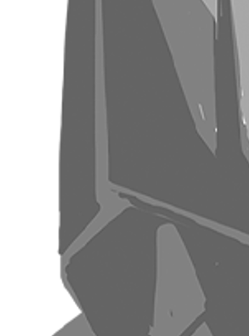
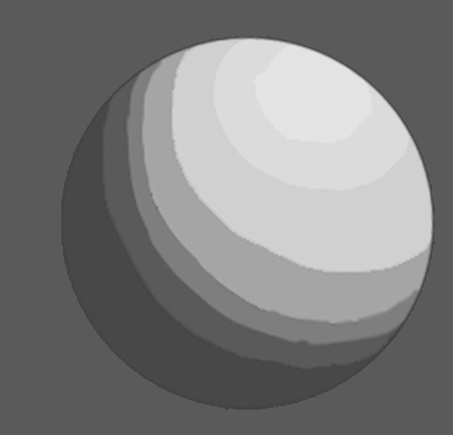

Krenz 色彩 L3 作业笔记
结果，结果，结果直到结课这作业我还没做完，笑死……就这样了。还是有推进的必要的在后面……
这一课主要是塑造。向自己强调——我是来学东西的，不是来赶进度的，我要尽量让我自己学到更多东西，感受到更多折磨，不要迷恋进度，要关心助教对其他人的频域，群里发的各种提示！
我按我做的顺序去做笔记。
L3 A01_1 节点一
Let’s 素描！
第一步和之前一样（但A01给了底图，像L2B02一样，让我专注形状），做底色，做二分！塔塔开！
我就做一下threshold吧。
虽然作业没有强调，但我认为做二分的细节的时候，应当尝试去反映那些亮部暗部的小转折，让格式塔在这一阶段也出马，但保证好看，保证不碎比这个更优先，我好奇如果我二分的形状和后面塑造的形状有对不上会不会冲突……我怀疑不会——因为我本来就没有给出完全的信息量，留有足够的余量让它们啮合在一起。
我自己画到画不下去再去看参考（要是没有底图的话我会玩儿更多花活儿，但……），注意到参考图其实对原图做了非常多的简化，很多小的起伏直接给它抹平了，很多地方的厚度被取消了……这基本上就更接近是创造褶皱的思路了我觉得。而我太过拘泥于原图了……行吧。明显地，抹平小的起伏的意义在于，我脑子里的风格化形体会更加整洁，易读，这也将反映到画面中。
而我其实就想画这样的整洁的画面不是吗？为何我要拘泥于原图的细小结构？让形体，让形状都更加大胆一些吧。又掉进沟里去了呀！但好在我独自认识到了这一点。
同时也注意到，整洁部分程度上可以认为是意味着更多的直线，更少的波浪线和弧线，这便是它抹平小起伏的方式。
我有点在想，其实那构成的小大长，整碎，提出这些东西，归根结底是出于两个目的——好看，易读？
AI一句话概括：让观众第一眼看懂，再让他继续想看。
但我对原图的形状也有些不满意——有些地方简化的过头了，离开了线稿根本就没有立体感了，违背了我之前的想法——二分本身就应当能成为作品。
L3 A01_2 节点一
为了尽量折磨自己，我两个都画，A02同样如此。
这第二张A01在细节量上就少很多。我先尝试自己画一下，然后再和参考对比。从第一张的第一个节点我认识到，我应当保持形状坚硬易读，忽略小的转折，所以我就这么操作。
注意到，参考图主动强化了刻板印象——受重力下垂的布料，应当总是距离底下的面越来越远的（就是说这布料自然地越垂越向外），所以投影就越来越大……但或许不是如此，或许只是做了下宽窄的变化避免条状无聊。
L3 A01_2 节点二
然后，下一步是亮中暗——即那些没有正对光源的亮面，它们的亮度要比正对光源的亮面暗。注意——做这种调子的形状，也是做形状！
注意到课件中把做这种亮中暗（以及其他）称为色阶，英文当然是 value scale。调子……在英文中是element，三大面五大调子，其中明暗交界线叫half tone（结果tone出现在这里……）或者core shadow。
值得注意的是——画面中，亮中暗并非只有1种颜色，实际上有4种！这4种颜色都做到同一个图层中吗？
必须向助教提问了：
这里有几个疑惑的地方迫切求解答（抱歉可能有点太罗嗦）：
关于流程问题
在之前做二分
关于对暗中暗的理解
亮中暗是否可以理解为：并非完全正对光源的亮面，其亮度会相对更低？亮中暗就是要通过做出这个信息以表达结构？
而如何理解这里的暗中暗？因为课件中强调这个不是闭塞，而“更难被光源照射”……这么解释的话感觉无法让人信服，因为这里的光源似乎说的是这个直射光，那暗面应该是整个不被照射，怎么会有差异呢
我这里写一下我自己的思考过程望助教过目……
我先对自己提出两个问题：
- 暗中暗，是否在没有直射光源，只有环境光的时候，仍旧存在？
- 提出这个问题，是因为我有两个相关的经验——
- blender中移除所有光源，仅保留世界的环境光，仍旧是能够通过识别物体的（但这时候看到的暗中暗是否是闭塞……？）
- L1角娘中，我们是在角娘的底图上做二分的，而底图上的暗部实际上也有明确的亮暗的区分（我在之前也把其中的暗部称为闭塞，但不知道绘制时是否确实是如此考虑的）
- 暗中暗是否和反光相关？
然后根据对问题回答的不同我提出了3个猜测：
- 做暗中暗，其实就是在做不反光的面，也等于同时是做了它的负形——暗中亮——反光面？但倘若是如此的话，我们在之前做的二分的暗部的颜色，就是考虑到了反光对它的提亮？（但感觉好像没必要纠结到此种程度…明度如果真不符合期望，后期再调就是了？）
- 在做二分的时候，我们原本的暗部的颜色，是那个“一般”的环境色，它没有考虑到越向内的部分接受到越少的光，而这部分其实和直射光是无关的，没有直射光也有暗中暗（但这个……其实就是闭塞？）
- 暗中暗确实是闭塞，但现实中的闭塞一般会更柔软几乎识别不到确实的边缘，这里把它分成了两部分去考虑？
我个人感觉最可能的答案是，这几个猜测都有部分程度的正确，这里是在同时做不反光的面和闭塞，把它们统一起来（后续再在它内部做更深的闭塞）？而在没有直射光只有环境光的时候，就没有这里的暗中暗，只有闭塞？
而在现实中，其实闭塞主要是由反光去定义的吧？只不过我们出于绘画考虑将反光面，不反光的面，闭塞给区分开来？
我希望知道在绘制时具体应当如何考虑，望老师赐教！
总之在这里我绘制暗中暗的原则是，在更少接受反光的面，更加相互靠近的，向内的面做暗中暗。
L3 A01_1 节点二
我麻了有没有？
实际上，我注意到，这些色阶上，其实同样做了非常多的设计……为了清晰展示这两团布的边缘，在本应当做闭塞的地方反而给它做亮了。

我前面写在凹进去的面，更少接受反光的面，做暗中暗。但我也注意到这里同时也要反过来思考——在凸出来的面，更多接受反光的面，做暗中亮。这正反两条规律都得在心里，虽然它们是等价的，但应用的场景其实是不同的。
似乎，不要“无事生非”——一个结构只有确实有必要去表达，或者不表达就不好看，才去做这个表达。
又似乎，暗中暗、暗中亮、亮中暗、亮中亮，又可以把它认为是一种结构的表达方式……我或许并不需要对亮面的每个形状都思考它的法线和光源方向的关系来定义它究竟是亮还是暗……似乎用“凸（更朝外）则亮，凹（更朝内）则暗”这个原则便能够给出一个初步的指导，能画出人眼能够接受的体积感，虽然一定不符合物理现实就是啦。我看参考图中似乎许多地方都是这样组织的。或者我其实还是弄错了。
当然，
真要应用这个原则的话，实际上就是说，我在亮部也在画闭塞……我觉得这个原则应该确实是可以用的——作为兜底。但一般来说这个其实是挺好判断的，不需要用到这个原则，除非是极度复杂的褶皱（这时候复杂的反光可能会造成这个原则的可用），人体啥的的话不会有这么复杂。
等等……我感觉我抓到什么，这里其实得做一个区分——对某片亮面区域，亮中暗的占比是否多？
- 倘若这整个亮面区域正对光源，即大片亮，少许相对暗，这时候我们思考亮中暗——亮中暗少，且大多发生在凹陷处，这是我们对亮中暗一般的定义——角度相对更加平行于光源方向的面
- 倘若这整个亮面区域不正对光源，即大片相对暗，少许亮，这时候我们思考亮中亮——亮中亮少，且大多发生在凸起处——突起代表有转折，有转折时，这个转折中的其中一个角度一般都会正好正对光源，因此得到一个亮中亮，因此对不正对光源的两面区域，亮中亮确实总是伴随突起
但……还是需要斟酌。我感觉事情可能比我想的更简单，更 trivial——把亮中暗，暗中暗，认为是从目的出发——表达物体的空间结构，而此时，物理上的各种原则只是指导，只是参考信息而已！因为遵循物理还真不一定能画出更易读的结构，而只能画出来……真实的结构，但真实，重要吗？。
如果是从目的出发，那这个原则就可用了，认为它是出于设计——我依据这个原则，因此主动地用亮暗去强调（强调这个词甚至还太温和了，该说是主动雕刻）凹凸，即物体的形体，让结果显得比现实更“典型”。（AI说这个“典型”其实就是符号化）
他妈的，画的emo了然后去检查原图，发现原图的立体感做的也不咋地，什么玩意儿？
或许我得先容忍这A01我先做到这样，螺旋上升嘛，不能吊死在一棵树上，这一个上午我都在思考和 emo。
我要重新思考一下这里的亮暗面小调子的做法。但在这之前我先推进一下A02找找感觉。
K大笔记中认为，背光面中的反光，闭塞，亮面的突起，高光，灰面……都是为了增加调子、形状、色彩信息的手段，并非全部都需要画。所以这里仍旧是从目的出发——想让画面形状丰富才去画。
K大没有指出自反光，其描述反光面，说的是环境的漫射光，这是否是说，我们自己画的时候，也不用去考虑这种自反光？我猜测它确实很难以思考，而且会让画面更难读……？
我要的是一个实践的规律，总之，不考虑自反光，凸亮凹暗这个原则对暗部就适用。
对亮部？思考，对每一片亮部的区域，我先要明确它是亮多还是灰多，如果亮多，用灰去做结构，如果灰多，用亮去做结构。而无论这里是亮多还是灰多，这里都是主动地以某个明度作为锚点，基础，即把这个面当作一整个平面（这时候，如果不再详细做塑造，就必须是利用完形理论，让观众去补结构），然后再在其中做调子，把这个平面各种切割，做出（感觉上的）高度差和角度差。
这个A01_1，老实说我觉得它的成图（至少是节点二的）有问题，同样地，参考图也有问题——这个布料似乎是有明显反光的那种，不适合直接参考它的亮暗。
L3 A02_1 节点一
起型……起型很蛋疼——这个要画很准，我就画了草稿后直接叠图了。
L3 A01_2 节点三
节点三就要做过渡了。这一步的关键，我（预先）认为是：
- 先做最主要的部分，对观感影响最大的部分，而哪些不怎么影响结构的部分，做了也影响不了大局的部分，就没必要做
- 宁方勿圆，尽量多地使用硬笔，只有在最后才使用软边缘做点缀
- 这一步仍旧是作形状，要让形状有趣，要做出风格化的形体和光影（此时边缘软硬也纳入考虑，不要做无聊的边缘，做出变化很重要）
这一步，真的是在做素描了，要大胆地依赖物体的空间结构，同时让形状漂亮。
同时，这一步也要先做分治——不要像铅笔素描一样一步一步过渡，要先做大形状，再从中细分出小形状；先做两边再做中间；先低解析度，再高解析度。
以及，要注意区分亮面暗面，这一步可能会把明暗交界线变得更宽，但绝不能让明暗交界线的位置被修改或无法再识别。
以及，不要指望第一次就成功，不要指望能完全原创出来。抄也是学习。
再总结一下：
- 先低解析度，再高解析度，先大形状大形体，再小形状小形体，始终保持分治的思路，绝不学铅笔素描的技法一步一步做过渡
- 不要破坏既有的形状、形体，除非它确实需要被破坏
- 特别地，要注意区分亮面暗面家族，绝不能让之前定义的亮面暗面混淆，即，始终让明暗交界线显著
- 始终保持觉察——我现在是在做亮面还是暗面，这个二分必须要保证（至少在目前，不要break它）
- 在脑子里始终有一个想要的感觉，带着快乐和趣味去做造型），不断地用形状玩儿，探索，检查怎样可以强化
我现在定义造型这个词，就是用形状去表达我想要的形体，forming
奇怪，我注意到好像像素描那样层层加深或者变淡好像是个可用的笔法……先涂大块亮，再在其中涂更小块的暗；先涂大块暗，再在其中涂更小块的亮，但这里，更小块的形状应当不会显著影响更大块的形状，即眯着眼看，加前加后都应当差不多。
注意到，形状其实可以很随心做——按漂亮的来，因为无论怎样，形体的主要趋势已经注定了，这最后的塑造，只是为了让画面更漂亮……？当然，还有下一步呢。
下一步涂抹……总之随便涂涂。其实没必要涂了我觉得……有啥必要呢。
L3 A02_1 节点二
这个作业需要用直线工具，为何不直接说呢？我自觉我线画的还挺直的啊妈的。
注意到课程中画的材质球……你让我一个外人来看，我只会觉得这个材质球没有给出反光……但其实给出了。

课程中把暗面比后脑勺下的部分亮的部分，称为暗中亮，结果就这张照片来说，暗中亮紧连着明暗交界线，这和素描的常识相悖……要给出解释的话，这是天光…
这里的作画顺序是先……
等等，去他妈的作画顺序，我觉得这是特殊性。
L3 A02_1 节点三
其实，这三大面五大调子也是心智模型不是吗？其实，加新调子（特指在low poly的形状上），是为了主动做区分不是吗？
除了最后的做边缘，基本没有什么新东西。
这次作业倒是让我第一次知道如何用排线做边缘……tmd这么简单的技法我以前怎么没有去思考过呢。
L2 B01 节点二
节点二就要做边缘喽，虽然在 L3 已经稍微做过了。
有一个问题还没提出来：之前看到助教对其他人的作业建议不要用太多尖角，为何要如此？以及这里的尖角指的就是明确的一个锐角？只需要稍微把这个锐角切一下就能消灭掉这个尖角吗？
助教说，一般做亮部的调子也会围绕着明暗交界线，明暗交界线实际不是一条线，是一条根据结构转折程度变化的宽窄面，在这个面中我们可以做很多手脚，丰富图形、改变色相、改变饱和度，大概都在这附近。
随便做做得嘞！这个作业我不太喜欢，我感觉原图也不好看，过程我都体验过一遍就够了。
L3 A01_1 节点三
TODO
L3 A02_2 节点三
TODO
本博客所有文章除特别声明外，均采用 CC BY-NC-SA 4.0 协议 ，转载请注明出处！